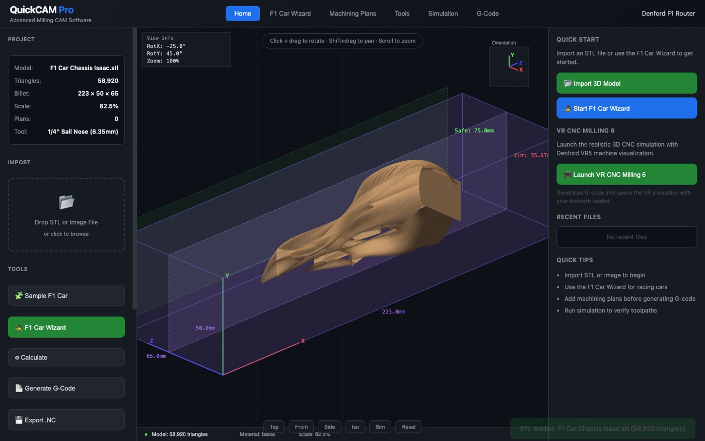
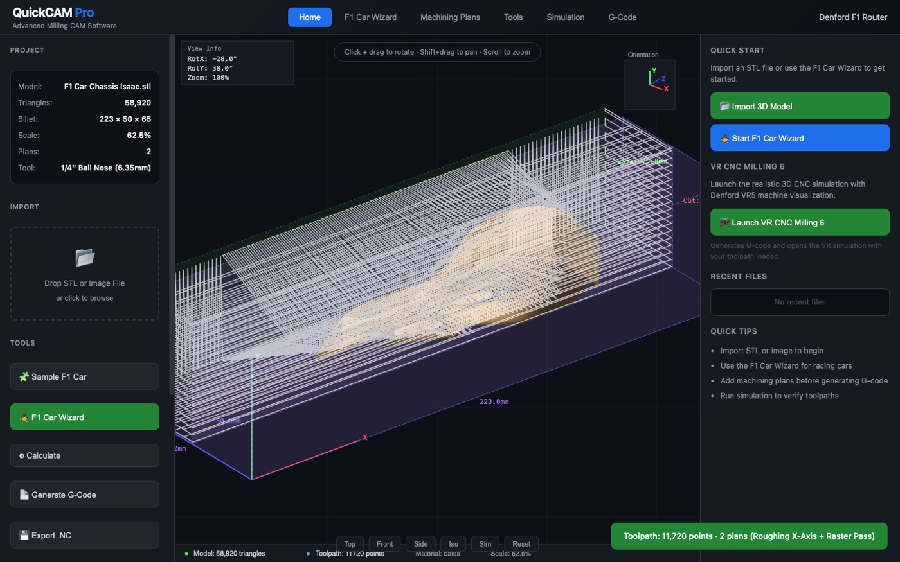
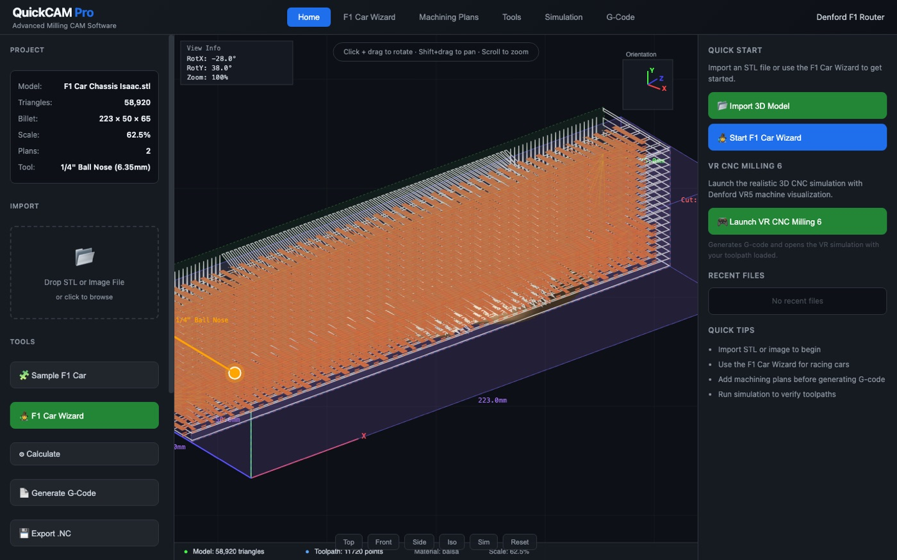

A single-file browser clone of Denford's QuickCAM Pro, built against the F1 in Schools design guide. The hard part was never the UI: it was that every user action looked like nothing happened, because the mesh was being back-face culled with the sign flipped. This page is the measured diagnosis — the pixel counts, the frame timings, and the four separate bugs that had to fall together before a real 2.9 MB chassis STL would appear inside the block.
One HTML file, no dependencies, works offline from a USB stick — so no Three.js, no WebGL pipeline, no build step. Every pixel is drawn by hand into a 2D canvas with a JavaScript transform-and-project loop. That is also why four geometry bugs could hide behind each other: there was no renderer to hand the problem to.
Four independent faults, each capable of producing a blank or broken viewport on its own. Fixing any three of them still leaves a broken app — which is exactly why the first three rounds of "fixes" looked like nothing had changed.
The face normal test kept faces pointing away from the camera and discarded the ones facing it. A closed shell therefore drew only its inner cavity: you saw the inside of the back wall, through the front. Visible face count was plausible, pixel count was near zero, and rotating made it worse instead of better.
camDir must point toward the camera and kept faces must satisfy dot(n, camDir) > 0. One comparison, wrong way round.
Angles were applied X → Y → Z. Since the auto-orientation sets Z = −90° to lay the chassis along the block, any later X tilt was first applied in model space and then swung 90° sideways — the car tipped onto its nose and partly out of frame. Setting rotX = 45° dropped the drawn area from 30,742 px to 14,550 px; it read as "the model disappears when I orientate it".
Now every axis rotates about the machine axes, Z first (modelMat()), so Z aligns the part and X/Y tilt it in the bed's frame: 45° tilt is now 30,742 px — unchanged, as it should be.
The heightmap rasteriser walked the raw mesh coordinates while the sampling grid was in billet space. With scale 62.5% and a −90° rotation, the two never overlapped: the grid stayed at −∞, no scanline produced a cutting move, and state.toolpath.length was 0 after every "Calculate". The simulation had nothing to play and the G-code had no toolpath block — which is what "the simulation isn't really doing the work" felt like from the outside.
The rasteriser now transforms each triangle through the same modelMat() the viewport uses, so what you see is what gets cut: 11,720 points, Z from 35.67 mm (the guide's derived cut depth) to 75.00 mm safe height.
Frames took 237 ms with a drag stuttering at 4 fps: 530,000 trig calls per frame because every vertex recomputed its own camera rotation. Hoisting the matrix and camera constants out of the loop took it to 20–28 ms. An attempt to batch faces into 16 Path2D shade buckets made it dramatically worse — building 177k subpaths took 6,525 ms, so that approach was measured and thrown away rather than shipped.

| symptom | measured before | after | why it mattered |
|---|---|---|---|
| model invisible | faces drawn = inner shell | 32,301 px painted | the headline complaint |
| disappears on orientate | 14,550 px @ rotX 45° | 30,742 px | every orientation looked like a crash |
| simulation does nothing | 0 toolpath points | 11,720 points | no toolpath = no motion = no G-code |
| drag is unusable | 237 ms / frame | 20–28 ms | 4 fps made the app feel broken |
| Path2D batching "optimisation" | 6,525 ms to build | removed | measured, rejected, documented |
| G-code ignores move types | 11,000+ × G01 | 549 G00 / 230 plunge / 10,941 G01 | a machine would crash on that |
Every number above came from driving the real app in headless
Chrome over the DevTools protocol and importing the file through the actual input[type=file]
element — not by calling the loader function directly, which is how the earlier "fixed!" claims went
wrong.

Covers the guide end to end — opening model → orientate → cut depth → billet → scale → boundary → tools → plans → parameters → toolpath → simulation → CNC file → side B → axle holes → top machining → lithophane image import → datum → final review → export. Step 25 renders blank; the wizard stops where it should.
Roughing X/Y/Z-Axis, X & Y Parallel, Raster, Radial, Spiral, Contour Follow, and Fine X/Y Parallel + Fine Raster. Cards are toggles, not decoration: the chosen plans drive the generated toolpath and get their own section header in the G-code.
Ball noses from 1/4" down to 2 mm, end mills, V-bits, drills, engravers, face mill — with the Manufacturing Centre tool (1/4" ball nose) and the axle-hole tool flagged from the guide rather than invented.
N-line numbering, G21/G17/G90/G40/G49/G80/G54 header, M06 T01, S8000 M03,
G04 P2000 dwell, real rapids, M30. Section comments name the plan that produced them.

| artifact | state | evidence |
|---|---|---|
| app | working | 101,682 B single file, no external requests |
| sha-256 | verified | be332767905adc607001424d4be3d379ebaac48fbc10227868a92a3a8b319b5b |
| mirror | byte-identical | same hash on source, demo and -mirror/ |
| import | verified | 58,920 tri in 412 ms via the real file input |
| toolpath | verified | 11,720 points, 2 plan sections |
| G-code | verified | 11,754 lines, VR5 header, M30 terminator |
| frame time | verified | 20–28 ms with 40,368 visible faces |
| offline | by construction | zero src=/href= to any origin |